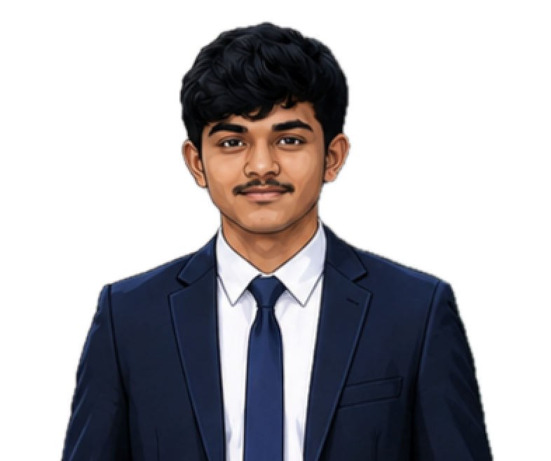
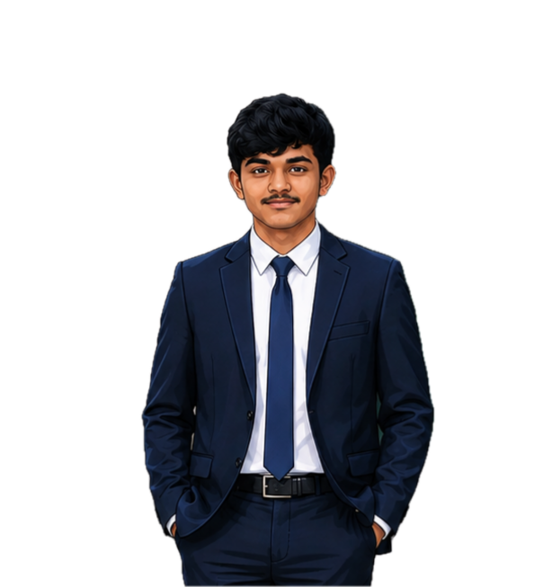

School
Bharathi Matriculation Hr. Sec. School
Coimbatore

Charuvikash E ConnectPortfolio · 2026
Student · Web Developer · Python & AI Learner
A higher-secondary graduate from Bharathi Matriculation Hr. Sec. School, Coimbatore, with a centum in Computer Science. I build practical Python and AI prototypes, communicate ideas clearly, and combine technical learning with writing, marketing, and public speaking.

01 — About
I studied the ICSE syllabus until grade 10, scoring 87%, and then completed higher secondary education with a strong Computer Science focus. My strongest learning happens through direct practice: notebooks, prototypes, presentations, and real conversations.
Alongside technology, I write Tamil poems and lyrics. That creative discipline has strengthened my ability to shape raw ideas into clear, persuasive work.
02 — Academics
School
Coimbatore
Grades 11-12
Higher secondary education with Computer Science focus.
Up to Grade 10
Application-driven problem solving and disciplined fundamentals.
03 — Selected Work & Recognition
Scored 100/100 in Computer Science in the HSC board examination, establishing a strong base for further technical work.
Completed certification at Sprout Knowledge and Solutions and built working models in Google Colab from data preparation to runnable prototypes.
Hosted the inter-house school quiz finals, managing the stage, timing, audience attention, and event flow.
Campaigned across 25+ classrooms, spoke directly with voters, and finished a close second with strong student support.
Authored a short story published in the Teentales anthology by iamanauthor and was selected as a runner-up.
04 — Skills & Practice Areas
Building small models, organizing notebooks, handling data, and developing practical prototypes in Google Colab.
Closed 100+ in-person sales, developing confidence in pitching, objection handling, and customer communication.
Freelance lyric writing, Tamil poetry, storytelling, and visual design for posters and social media creatives.
05 — Inspirations
Founder · Infosys
A reference for ethical enterprise, disciplined leadership, and building an Indian technology company with global respect.
Tamil Poetry & Lyrics
A standard for expressive Tamil writing: economy of words, depth of feeling, and music carried through meaning.
Business & Discipline
A reminder that patient compounding, consistency, and disciplined execution can turn small advantages into lasting scale.
06 — Vision
My immediate aim is to become one of the first students in my cohort to secure campus placement. From there, I want to compound my learning across product, sales, technology, and enterprise until I am prepared to build a multipurpose company with serious scale.
07 — Contact
I am available to discuss technical projects, writing work, internships, learning opportunities, and collaboration.